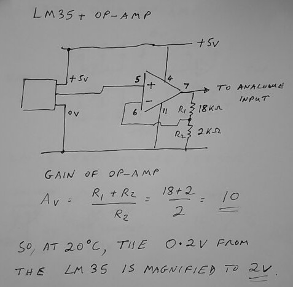
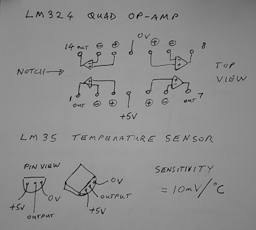
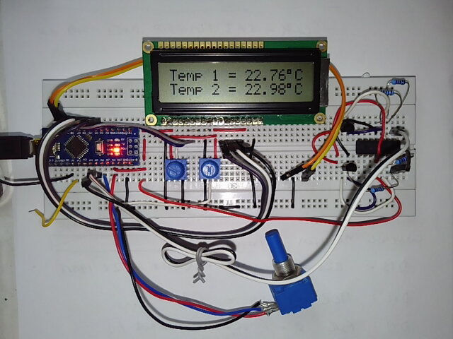

Weather Station
Brief: to produce a weather station with at least two of the following measurements:
Wind speed, wind direction, temperature.
All inputs will be converted to voltages, using a 360 degree potentiometer for wind direction, a dc generator for wind speed, and LM35 type temperature sensors. The information must be displayed in separate fields on the 16 by 2 LCD.
More information to get you started on this project is provided here: Weather Station Demonstration.
Marks will be awarded as follows:
- 0 to 40%: For a non-functional unit which has some information on the LCD.
- 40 to 50%: For display of at least one of the measurements specified.
- 50 to 60% For display of at least two of the measurements specified and suitably formatted.
- 60 to 70%: For display of all three measurements.
- 70% plus: For additional functionality such as max and min values, extra displays such as a ring of eight LEDs to show wind direction using cardinal points.
Weather Station Demonstration
Watch Dr. Davies explaining how to approach the Weather Station mini-project.
The video lasts 17 minutes.
Here is a sketch of the op-amp circuit.

And here are details of the LM324 op-amp and LM35 temperature sensor.

Here are some photos of the advanced demonstration program running.
Note that the wind direction has been scaled to give a number 0 to 359 instead of 0 to 1023.
In this photo, the “raw” temperature data has been scaled to give degrees Celsius.

Here is a listing of the basic programme, which presents the “raw” data 0 to 1023.
/*
LiquidCrystal Library - Hello World
Demonstrates the use a 16x2 LCD display. The LiquidCrystal
library works with all LCD displays that are compatible with the
Hitachi HD44780 driver. There are many of them out there, and you
can usually tell them by the 16-pin interface.
The circuit:
* LCD RS pin to digital pin 12
* LCD Enable pin to digital pin 11
* LCD D4 pin to digital pin 5
* LCD D5 pin to digital pin 4
* LCD D6 pin to digital pin 3
* LCD D7 pin to digital pin 2
* LCD R/W pin to ground
* LCD VSS pin to ground
* LCD VCC pin to 5V
* 10K resistor:
* ends to +5V and ground
* wiper to LCD VO pin (pin 3)
Library originally added 18 Apr 2008
by David A. Mellis
library modified 5 Jul 2009
by Limor Fried (http://www.ladyada.net)
example added 9 Jul 2009
by Tom Igoe
modified 22 Nov 2010
by Tom Igoe
modified 7 Nov 2016
by Arturo Guadalupi
This example code is in the public domain.
http://www.arduino.cc/en/Tutorial/LiquidCrystalHelloWorld
*/
// include the library code:
#include <LiquidCrystal.h>
// initialize the library by associating any needed LCD interface pin
// with the arduino pin number it is connected to
const int rs = 8, en = 9, d4 = 4, d5 = 5, d6 = 6, d7 = 7;
LiquidCrystal lcd(rs, en, d4, d5, d6, d7);
void setup() {
// set up the LCD's number of columns and rows:
lcd.begin(16, 2);
// Print a message to the LCD.
lcd.print("Weather Station");
delay (1000);
}
void loop() {
lcd.clear();
winddir();
windspd();
delay (1500);
lcd.clear();
temp1();
temp2();
delay(1500);
}
void winddir(void)
{
lcd.setCursor(0, 0);
lcd.print("Wind Dir = ");
lcd.setCursor(11, 0);
lcd.print(analogRead(6));
}
void windspd(void)
{
lcd.setCursor(0, 1);
lcd.print("Wind Spd = ");
lcd.setCursor(11, 1);
lcd.print(analogRead(7));
}
void temp1(void)
{
lcd.setCursor(0, 0);
lcd.print("Temp 1 = ");
lcd.setCursor(9, 0);
lcd.print(analogRead(5));
}
void temp2(void)
{
lcd.setCursor(0, 1);
lcd.print("Temp 2 = ");
lcd.setCursor(9, 1);
lcd.print(analogRead(4));
}View and download the code from GitHub gist weather.ino.
Copyright © 2021-2024 Swansea University. All rights reserved.